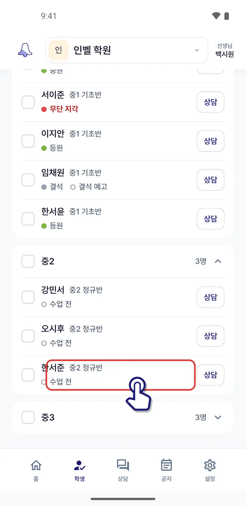
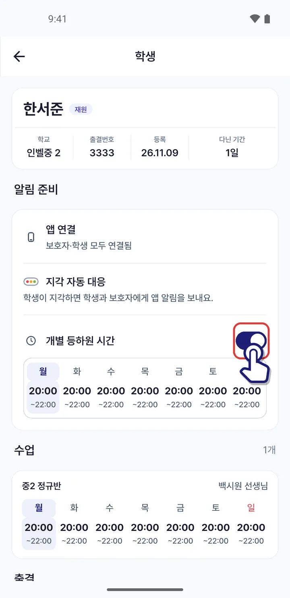
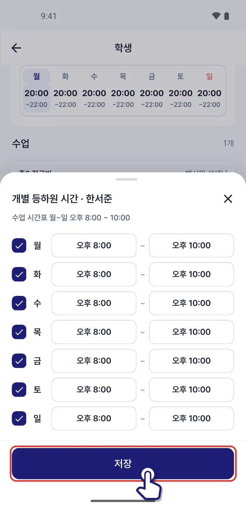

이 학생만 오는 시간을 따로 정하고 싶어요
학생 화면 「알림 준비」 카드에서 개별 등하원 시간을 켜면, 그 학생은 그 시간에 맞춰 지각 알림이 가요.
1아래 「학생」 탭에서 학생 이름을 눌러요.

2학생 화면 「알림 준비」 카드에서 「개별 등하원 시간」을 켜요. 이미 켜져 있으면 아래 요일 칸을 눌러요.

3요일마다 이 학생이 오고 가는 시각을 맞추고 「저장」을 눌러요.

저장하면 그 학생의 지각 자동 대응이 바뀐 시각으로 움직여요.
비슷한 상황
- 학생 출결을 찍고 싶어요학생 탭에서 학생을 체크하고 「출결 처리」로 등원 · 하원 · 결석을 기록해요.›
- 수업 시간이 지났는데 안 온 학생을 챙기고 싶어요학원 홈 「지각 자동 대응」 카드에서 아직 안 온 학생을 보고, 그 학생 상담방으로 바로 가요.›
- 숙제를 안 해 온 학생을 기록하고 싶어요숙제에 문제가 있는 학생만 체크해 「미제출」 · 「불성실」로 기록하면 학부모님께 알려 드려요.›
- 학부모 대신 결석 · 지각을 예고하고 싶어요학부모님이 전화나 카톡으로 알려 오면 학생 탭에서 대신 예고해요. 그날은 지각 자동 대응이 쉬고, 학부모님께 알림이 가요.›
앱 1.0.71 화면 기준